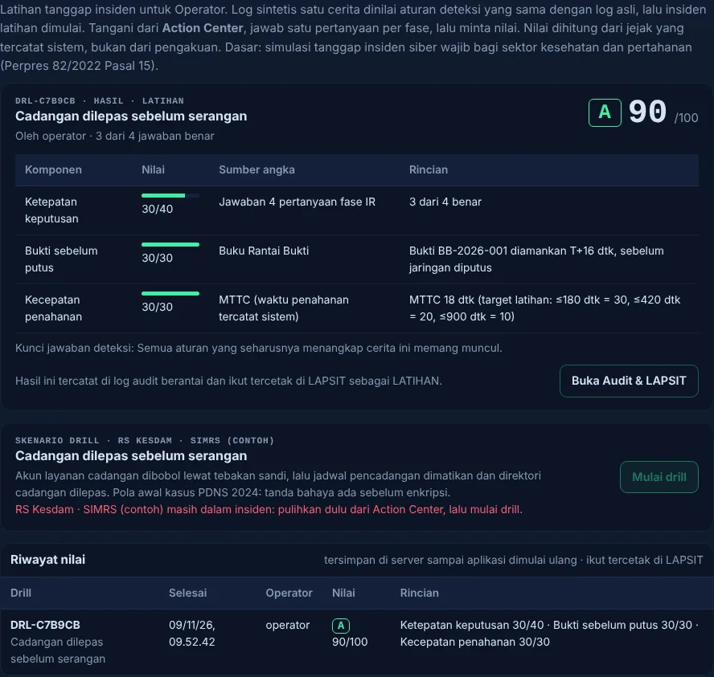

Bukti dulu,baru putus.
Nusantara Shield adalah dasbor pertahanan siber luring untuk aset IT dan OT satuan TNI AD, dicontohkan pada rumah sakit Kesdam. Ia memperingatkan lebih dulu, memutus jalur penyerang dalam ≈1,2 detik setelah Operator memutuskan, dan tidak pernah menghapus barang bukti. Semuanya berjalan di server satuan sendiri, tanpa internet.
- sebelum seranganPeringatan diniKabar ancaman, AI lokal, dan aturan deteksi menaikkan aset ke WASPADA, lengkap dengan alasan.
- 0,6 dtkOperator memutuskanTombol isolasi ditahan, bukan diklik. Mesin tidak pernah memutus sendiri.
- T+0Bukti disegelSalinan bukti diberi sidik jari SHA-256 dan dicatat di Buku Rantai Bukti.
- T+≈1,2 dtkJalur pertama putusTanpa bukti, pemutusan ditolak sistem. Genset tetap menyala.
- sesudahnyaLAPSIT dan pemulihan terkunciLaporan terbit otomatis; pemulihan dibuka hanya bila sidik jari bukti cocok ulang.
Di purwarupa, pengambilan bukti dan perintah ke sakelar jaringan masih simulasi; urutan dan kuncinya dijalankan sungguhan oleh server. Rincian: Dokumentasi Teknis §3.1.
Lihat dalam video
Privasi. Video baru dimuat dari YouTube setelah tombol ditekan. Halaman ini sendiri tidak memuat apa pun dari luar.
Tanda bahayanya sudah ada. Tindakannya yang terlambat.
Menurut kronologi BSSN, upaya mematikan Windows Defender di Pusat Data Nasional Sementara (PDNS) terekam 17 Juni 2024 pukul 23.15 WIB. Aktivitas jahat baru berjalan 20 Juni pukul 00.54. Ada ≈49 jam antara tanda bahaya dan kelumpuhan.
Pola yang sama mengancam fasilitas satuan, terutama rumah sakit TNI AD yang memadukan sistem kantor dan mesin (genset, catu daya). Empat kelemahan respons manual:
- Banjir peringatan. Ancaman nyata tenggelam di antara ratusan alarm yang tidak menyangkut aset satuan.
- Penahanan yang lambat dan ragu. Izin berjenjang dan tombol bermakna ganda membuat penyerang leluasa menyebar.
- Bukti rusak saat pemulihan darurat. Server di-restart sebelum bukti disalin, sehingga pelaku tidak bisa diidentifikasi.
- Petugas jaga bukan ahli siber, dan jarang berlatih. Ahli di satuan hanya satu atau dua orang; urutan tindakan dipelajari di tengah krisis.
Satu siklus keputusan: amati, orientasi, putuskan, bertindak.
Amati
Kabar ancaman dicocokkan dengan port dan sektor aset satuan. AI lokal (Isolation Forest) menilai lalu lintas tiap aset, dan aturan deteksi berambang terbuka menghitung upaya login, pemindaian, dan perintah Modbus.
Orientasi
Hasilnya menaikkan aset ke WASPADA beserta alasan dalam bahasa biasa dan teknik MITRE ATT&CK. Tidak ada yang diputus pada tahap ini.
Putuskan
Hanya akun Operator yang bisa memerintah isolasi, dengan menahan tombol 0,6 detik. Pengamat (misalnya Dansat) melihat, tidak menekan.
Bertindak
Bukti disegel, jalur diputus berurutan, LAPSIT terbit, dan pemulihan terkunci sampai sidik jari bukti cocok ulang. Semua tercatat di log audit berantai yang diperiksa dengan kunci publik.


Operator baru dilatih dan dinilai sebelum insiden datang.
Drill Kesiapan memutar log serangan sintetis lewat aturan deteksi yang sama dengan log asli, lalu memulai insiden latihan. Operator menanganinya di Action Center dan menjawab satu pertanyaan per fase penanganan insiden.
Nilai 0–100 dihitung server dari jejak yang tercatat, bukan dari pengakuan: ketepatan keputusan 40, bukti diamankan sebelum jaringan diputus 30, dan kecepatan penahanan (MTTC) 30. Kunci jawaban tidak dikirim ke browser sebelum pertanyaan dijawab. Bila aturan deteksi yang seharusnya menangkap cerita itu ternyata diam, drill melaporkannya. Hasilnya masuk log audit dan LAPSIT dengan tanda LATIHAN.
Dua skenario sudah berjalan: cadangan dilepas sebelum serangan (auth.log, pola awal kasus PDNS) dan perintah asing ke pengendali genset (keluaran Suricata).


Membaca sensor yang sudah dimiliki satuan.
Keluaran Wazuh (alerts.json) dan Suricata (eve.json), juga auth.log, log firewall, dan CSV, bisa diimpor tanpa internet. Aturan deteksi yang sama menilainya, dan temuannya hanya menaikkan WASPADA.
Nusantara Shield hanya membaca berkas keluaran sensor. Ia tidak memasang, mengatur, atau menghubungi sensor, dan tidak menjalankan active response atau IPS: memutus tetap keputusan Operator. Nama akun di log tidak disimpan, dan isi log tidak masuk log audit. Contoh berkas sintetis ada di docs/contoh-log/.

Alatnya ada. Yang belum ada adalah urutan yang dijaga.
Perbandingan menurut jenis alat, bukan produk tertentu. Penilaian ini dari sudut kebutuhan satuan: data tidak boleh keluar, Operator belum tentu ahli, dan bukti harus bisa dipertanggungjawabkan.
Batas yang kami akui.
- Telemetri langsung dan kabar ancaman masih sintetis. Log asli dan keluaran Wazuh/Suricata masuk lewat impor berkas, belum dialirkan terus-menerus dari sensor.
- Pengambilan bukti dan perintah ke sakelar jaringan masih simulasi; urutan dan kuncinya sungguhan.
- Salinan memori penuh (memory dump) belum dibangun; rancangannya tiga lapis, dan baru lapis isolasi darurat yang berjalan.
- Drill baru dua skenario. Skenario perubahan halaman situs satuan dan tabletop exercise untuk pimpinan masih peta jalan.
- Belum diuji di jaringan satuan sungguhan, dan layanan systemd belum diuji di mesin Ubuntu fisik.
Masuk ke satuan tanpa mengubah yang sudah ada.
Unduh, lalu periksa sendiri.
Setiap berkas di bawah punya sidik jari SHA-256. Paket pemasangan ditandatangani Ed25519; cocokkan kunci rilisnya dengan sidik jari ini sebelum memasang.
Tiga perintah untuk juri
# 1. Jalankan seluruh uji (≈45 detik); ringkasannya per aturan doktrin git clone https://github.com/pisangsisir/Nusantara-Shield-v5.2 && cd Nusantara-Shield-v5.2 python3 -m venv .venv && . .venv/bin/activate && pip install -r requirements.txt ./run_tests.sh # 2. Nyalakan dasbor (sandi awal dicetak di terminal), buka http://127.0.0.1:8000 python -m uvicorn app.main:app --host 127.0.0.1 --port 8000 # 3. Paket Ubuntu: periksa tanda tangan sebelum memasang (langkah lengkap di BACA-SAYA.txt) openssl pkey -pubin -in kunci-publik-rilis.pem -outform DER | sha256sum openssl pkeyutl -verify -pubin -inkey kunci-publik-rilis.pem -rawin -in SHA256SUMS -sigfile SHA256SUMS.sig